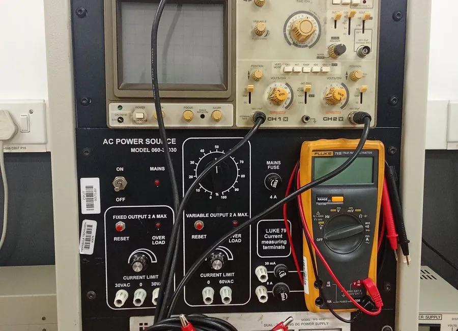
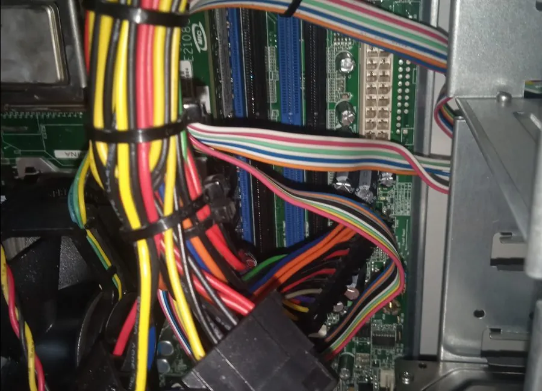
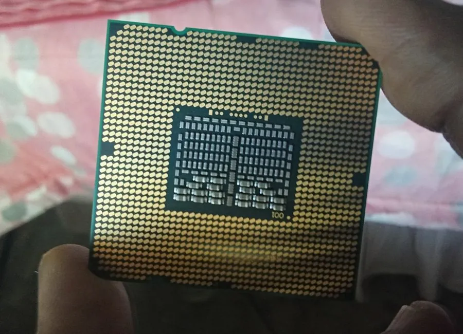
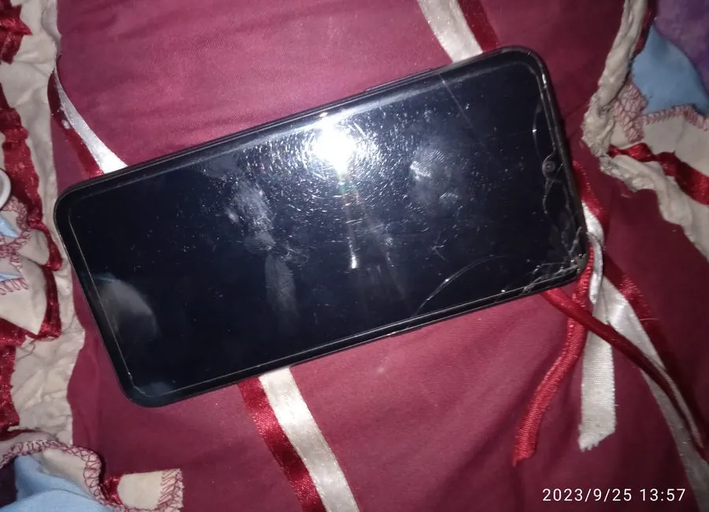
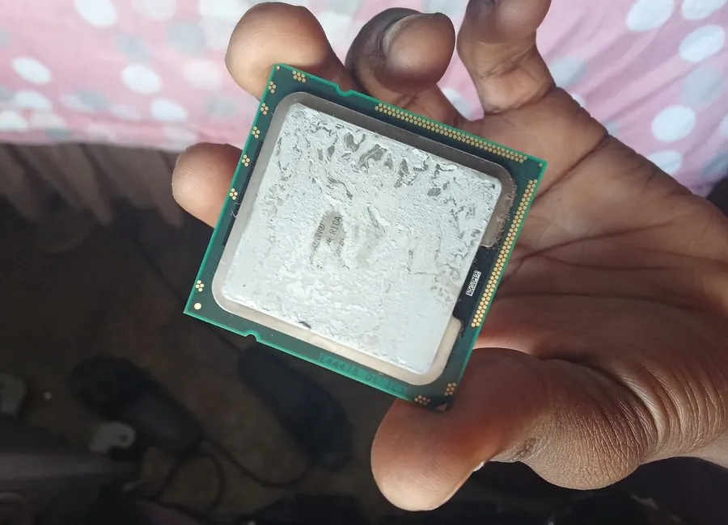

Laptop, PC and phone support in Cape Town, explained plainly.
Student-run and affordable. I find the fault first, explain what I find, and confirm the price before any paid repair work starts.
- Diagnosis first
- Price confirmed before repair work
- Parts quoted separately
Prefer to talk? Call 068 394 7321
Slow laptop or PC
- Often caused by
- Too many programs starting with Windows; a full or ageing drive; not enough RAM for how you use it.
- I’d check first
- What starts with Windows, how full and how old the drive is, and how much memory there is.
- Send me
- The make and model, and whether it was always slow or got slower recently.
- Starting point
- Diagnostics from R80. Cleanup or upgrade is quoted after the check.
Windows won’t start
- Often caused by
- A failed update or damaged system files; a failing drive; loose or faulty memory or cables.
- I’d check first
- Whether it powers on, shows an error or beeps, plus the health of the drive.
- Send me
- A photo of the error on screen and what happened just before it stopped.
- Starting point
- Diagnostics from R80. Any repair is quoted after the check.
Virus or pop-ups in the browser
- Often caused by
- An unwanted browser extension; a website that was given permission to send notifications; software bundled with a free download.
- I’d check first
- Installed programs, browser extensions, start-up items and a malware scan.
- Send me
- A photo of the pop-up, which browser it is, and roughly when it began.
- Starting point
- Virus removal from R150.
Phone not charging
- Often caused by
- A worn cable or charger; lint or dirt in the charging port; a worn battery.
- I’d check first
- A different cable and charger first, then the port and the battery.
- Send me
- The phone model, whether it charges at an angle, slowly or not at all, and a photo of the port.
- Starting point
- Phone check-up from R80. Any part is quoted separately.
Battery draining fast
- Often caused by
- An ageing battery; apps running in the background; weak signal or screen settings.
- I’d check first
- Battery health, which apps use the most power, and settings.
- Send me
- The phone or laptop model, how old it is, and how long the battery lasts now compared with before.
- Starting point
- Phone check-up from R80.
White, black or flickering screen
- Often caused by
- A loose or damaged display cable; a cracked or failed screen; a graphics or motherboard fault.
- I’d check first
- Whether it powers on, an external monitor test where possible, and the connections.
- Send me
- A photo or short video of the screen, whether lights or fans come on, and whether it was dropped or got wet.
- Starting point
- Diagnostics from R80. A repair is quoted once the fault is known.
WiFi connected but no internet
- Often caused by
- A router that needs a restart or a settings fix; DNS or address settings; weak signal.
- I’d check first
- Whether other devices connect, the router settings and the signal.
- Send me
- The router make, whether other devices work, and when it started.
- Starting point
- WiFi and router setup from R150.
Drivers or software errors
- Often caused by
- Missing or outdated drivers; software that doesn’t suit your version of Windows; a problem after a Windows update.
- I’d check first
- Device Manager, update history and which program is failing.
- Send me
- The exact error message (a photo is fine) and what you were doing when it appeared.
- Starting point
- Software setup from R150.
Guidance only. A proper check is needed to confirm the fault.
Diagnosis first
I find the fault before suggesting a repair, so you are not paying to guess.
Price before paid work
Starting prices are public. Your job’s price is confirmed first, with parts quoted separately.
Plain language
You get the likely cause and your options in words that make sense, not a list of jargon.
What I can help with
Phones, laptops, desktops and home WiFi. Every service lists what is included and what I will not promise.
Phone repairs and check-ups
Battery, charging, screen-related faults and general troubleshooting.
PC and desktop repairs
Hardware checks, power and display faults, wiring inspection and cleaning.
Component-level inspection
Board and connector checks, with honest advice before anything is replaced.
Software and Windows
Windows setup, drivers, updates, and getting a slow system running properly.
Virus and malware removal
Pop-ups, suspicious programs and unwanted browser add-ons.
RAM and SSD upgrades
Advice on what your machine can take, and help fitting it.
WiFi and router setup
Router setup, connection problems and basic speed checks.
How it works
Six steps from your first message to a result you have checked yourself.
Message me on WhatsApp
Send the device model, what is wrong, and photos or a short video if you can.
I ask a few questions
What happened before the fault started helps me narrow it down.
Quick diagnosis
You get the likely cause and the next step in plain language.
Price confirmed
Starting prices are public. I confirm the price for your job, and any parts separately, before paid repair work begins.
Repair or setup
The repair, install, cleanup or setup is done, with updates where it helps.
You check the result
You test the device or setup, and I explain what was done.
Starting prices
Starting prices, not final quotes. Parts are not included. The price for your job is confirmed before repair work starts.
- DiagnosticsFrom R80
Basic fault check and advice.
- Phone check-upFrom R80
Battery, charging and general phone checks.
- Software setupFrom R150
Windows, apps, drivers and updates.
- Virus removalFrom R150
Malware checks and cleanup.
- RAM or SSD upgrade helpFrom R200
Upgrade assistance. Parts are not included.
The kind of work I do
Photos from diagnostic and repair work. Captions say what each one shows.





Where I work in Cape Town
I currently help people around these areas. Message first so we can confirm the time and arrangement. If you are nearby but not listed, ask and I will tell you whether it works.
- Cape Town CBD
- Observatory
- Parow
- Bellville
- Belhar
Looking specifically for computer or laptop help? See computer and laptop repair in Cape Town.
What this is about
Mission
Make dependable tech support affordable and easy to understand for people in Cape Town: check the problem carefully, explain the options in plain language, and recommend practical repairs or upgrades at a price confirmed up front.
Vision
Grow into a trusted local tech-support name, known for honest advice, careful work and fair prices, so technology causes people less stress.
Tell me what’s wrong.
Send the device model and a short description. Photos or a short video help. I will reply on WhatsApp.